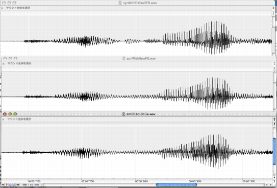

[x,fs]=wavread('../Sample/em001c1013a.wav');
[f0raw,vuv,auxouts,prmouts]=MulticueF0v14(x,fs);
[ap,analysisParams]=exstraightAPind(x,fs,f0raw);
[n3sgram,prmP]=exstraightspec(x,f0raw.*vuv,fs);
[f0rawFixp,apFixp,analysisParams]=exstraightsource(x,fs);
[n3sgramFixp,prmP]=exstraightspec(x,f0rawFixp,fs);
[sy,prmS] = exstraightsynth(f0raw.*vuv,n3sgram,ap,fs);
[syFixp,prmS] = exstraightsynth(f0rawFixp,n3sgramFixp,apFixp,fs);
The original and synthesized sounds are linked below. (List of links only accessible in the HTML version of this document.)
The extracted F0 of the speech is shown in Figure 1. The red line shows the F0 trajectory extracted by the default extractor. The blue line shows the F0 trajectory extracted by the new F0 extractor. As you can see the new F0 extractor provides non-zero trajectory even in unvoiced or silent segments. The voiced/unvoiced distinction information is given in the binary value 'vuv'. The segments detected as voiced are represented as black boardered boxes in Figure 1.
The default F0 trajectory has several glitches in voiced portion. Those glitches are disappeared in the new F0 trajectory. Especially glitch around 800 ms produces noticeable defect in resynthesized speech by the default method. The following figure shows waveforms around 800 ms. From top to bottom, the default resynthesis, the new resynthesis and the original waveforms are displayed.
|  |